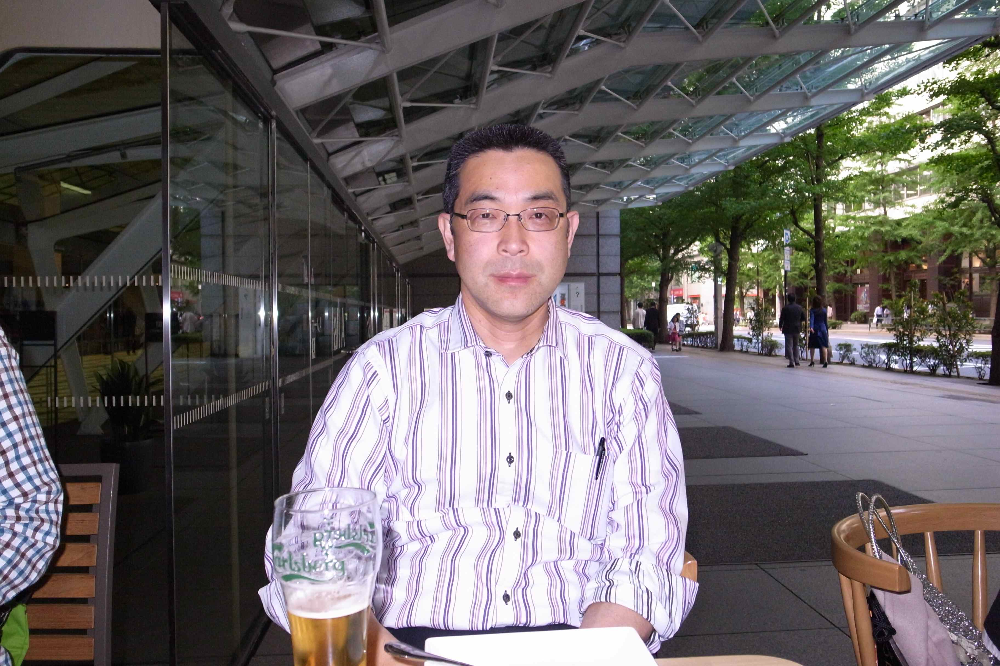
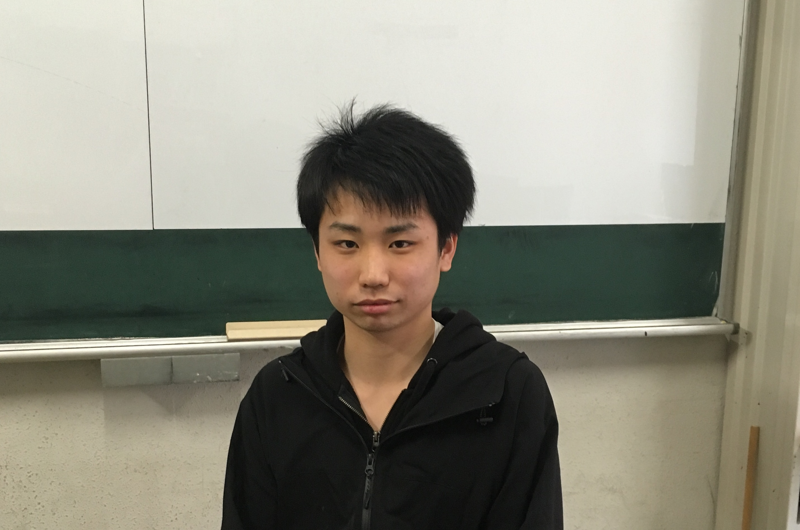

|  | 小泉裕康, 准教授 |
| 出身地 | 新潟県 |
| 居室 | 計算科学研究センター220号室 |
| 現在の研究分野 | 銅酸化物の超伝導機構解明。 銅酸化物超伝導体を利用した量子コンピューター実現のための理論研究。 量子強相関系としての自然言語と自然言語の量子情報処理理論。 |
|  | 石川亜留都, M2 |
| 出身地 | 秋田県 |
| 居室 | 計算科学研究センター共同研究室2B |
| 現在の研究分野 | 銅酸化物を量子ビットとした量子コンピュータに関する理論的研究 |
| 守尾直輝, M1 |
|
| 出身地 | 千葉県 |
| 居室 | 計算科学研究センター共同研究室2B |
| 現在の研究分野 | 銅酸化物の超伝導機構解明のための理論的研究。 |
| 近藤拓海, B４ |
|
| 出身地 | 広島県 |
| 居室 | 第三エリアD棟303号室 |
| 現在の研究分野 | 銅酸化物の超伝導機構解明のための理論的研究。 |